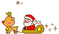

Happy brithday
dear xiaotong:
本人这几天都在寻找最能代表我祝福心愿的信息，可是很无奈，不知道是我没有找到她，还是她没找到我，总之两个字，没有!呵呵!所以，只能用我最平实的语言来表达 我最深最深的祝福.这是在你生日时候送给你的，只属于你的，生日快乐！祝你在以后每个没有我陪伴的生日都开开心心！love you
我跟上帝说我希望和你的友谊天长地久，上帝说不行，只能7天，我说好：星期一到星期天。上帝说不行只能4天，我说好：春天夏天秋天冬天。上帝说不行，只能3天，我说好：昨天今天明天。上帝说不行，只能2天，我说好：黑天和白天。上帝说不行，只能1天，我说好，上帝很诧异，我说：在我活着的每一天
蝴蝶对蜜蜂说：你真够小气的，装一肚子甜言蜜语却一句也舍不得给我。蜜蜂说：哼!还说我呢，你头上顶看那么长两根天线,咋不发给我短信呀?
想在圣诞节给你个惊喜，所以在圣诞节送你这个礼物，当然也要送上圣诞节祝福啦！
Wishing you a blessed Christmas and a New Year filled with happy surprises.
祝圣诞平安，新年中有意想不到的收获！